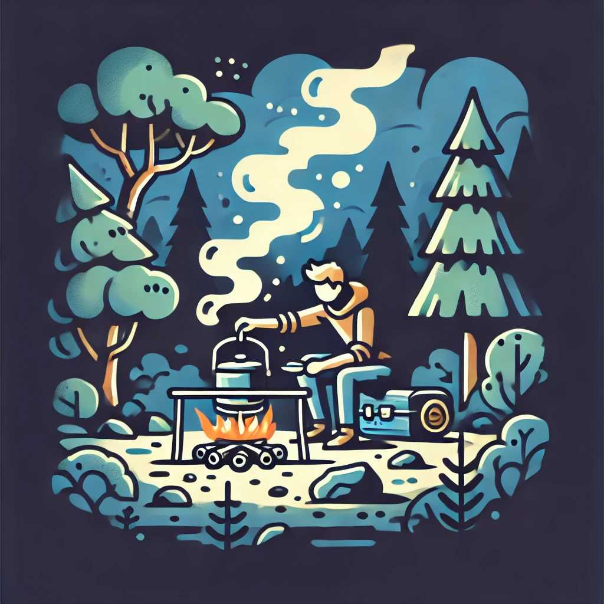

Survival Cooking: Preparing Meals with Limited Resources
When you find yourself in a survival situation, preparing meals with limited resources can be a challenge. Knowing how to cook with basic tools and ingredients can help you stay nourished and energized. This guide covers essential tips and techniques for survival cooking.
1. Basic Cooking Methods
Understanding basic cooking methods is crucial for preparing food in the wild.
Cooking Methods:
- Boiling: Use a pot or makeshift container to boil water and cook food.
- Grilling: Use a grill or create a makeshift grill with sticks or rocks to cook over an open fire.
- Roasting: Skewer food on a stick and hold it over the fire to roast.
- Baking: Use a covered pot or dig a hole in the ground to create an oven for baking.
2. Essential Cooking Tools
Having the right tools can make survival cooking more manageable.
Recommended Tools:
- Fireproof Pot or Pan: For boiling and cooking over a fire.
- Grill Rack: A portable grill rack or makeshift grill for grilling.
- Skewers or Sticks: For roasting food over an open fire.
- Knife: A sharp knife for preparing food.
- Utensils: Basic utensils like a spoon, fork, and spatula.
3. Foraging for Ingredients
Knowing how to forage for edible plants, berries, and other natural ingredients can supplement your food supply.
Foraging Tips:
- Identify Edible Plants: Learn to recognize common edible plants in your area.
- Berries and Fruits: Pick ripe berries and fruits that are safe to eat.
- Nuts and Seeds: Collect nuts and seeds for a nutritious addition to your meals.
- Fishing and Hunting: Catch fish or hunt small game for protein.
4. Preparing Simple Meals
With limited resources, simplicity is key. Focus on meals that are easy to prepare and require minimal ingredients.
Simple Meal Ideas:
- Soup or Stew: Boil water and add foraged greens, roots, and small game or fish.
- Grilled Fish or Meat: Season with salt or wild herbs and grill over an open fire.
- Roasted Vegetables: Skewer vegetables and roast them over the fire.
- Baked Root Vegetables: Bury root vegetables in hot coals to bake.
5. Preserving Food
Preserving food can help extend its shelf life and ensure you have a supply during longer survival situations.
Preservation Methods:
- Drying: Dry meat, fish, fruits, and vegetables to preserve them. Use the sun, fire, or a makeshift drying rack.
- Smoking: Smoke meat and fish over a fire to add flavor and preserve them.
- Salting: Use salt to cure meat and fish, preventing spoilage.
6. Safety and Hygiene
Maintaining food safety and hygiene is critical to avoid illness in a survival situation.
Safety Tips:
- Cleanliness: Wash your hands and cooking tools regularly.
- Cook Thoroughly: Ensure meat and fish are cooked thoroughly to kill harmful bacteria.
- Avoid Contaminated Water: Use purified water for cooking and drinking.
- Proper Storage: Store food in a cool, dry place to prevent spoilage.
7. Maximizing Nutritional Value
Focus on meals that provide balanced nutrition to maintain your energy and health.
Nutritional Tips:
- Protein: Include sources of protein like fish, meat, nuts, and seeds.
- Carbohydrates: Forage for edible roots and tubers for carbohydrates.
- Vitamins and Minerals: Include a variety of plants and fruits to get essential vitamins and minerals.
- Hydration: Drink plenty of water and include hydrating foods like fruits and soups.
Conclusion
Survival cooking with limited resources requires creativity, knowledge, and resourcefulness. By understanding basic cooking methods, foraging for ingredients, preparing simple meals, preserving food, maintaining safety and hygiene, and maximizing nutritional value, you can ensure you stay nourished and healthy in any survival situation. Practice these skills regularly to be prepared for any emergency.